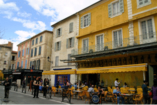
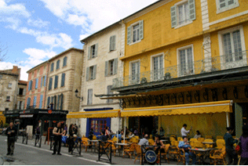

紐西蘭遊記
 

It was the first time for me to take a domestic flight from Kaohsiung International Airport to Magong city, Penghu.Interestingly there is no boarding gate,I had to walk onto the plane.The flight duration was around 30 minutes, but we encountered air turbulence from a nearby typhoon when landing.The airplane bounced up and down to the ground just like dribbling a basketball.Hence we had the second landing.Yes it was successful.Otherwise you wouldn't see this article.
我們第三天住進了一間B&B旅館，紐西蘭的B&B有點像歐洲的青年旅館，通常有露營車的停靠 區和小木屋。公共區有衛浴、廁所、廚房、餐廳，都非常乾淨。而且廚房裡什麼都有，很方 便。三人以上的房間多半是上下舖，附有一個水槽及流理台，房價在2000台幣上下，一家3-5 口可以省下不少住宿費。